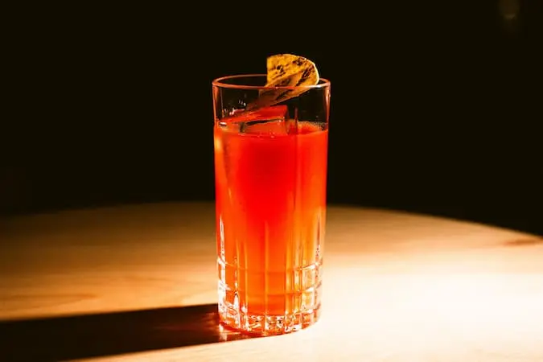

Cuba Libre

Un classique simple et pétillant : rhum, cola et citron vert.
★★★★☆
Ingrédients
- 5 cl de rhum
- 12 cl de cola
- 1/2 citron vert
- Glaçons
Préparation
- Remplir un grand verre de glaçons.
- Presser le demi-citron vert dans le verre.
- Verser le rhum.
- Compléter avec le cola et mélanger doucement.